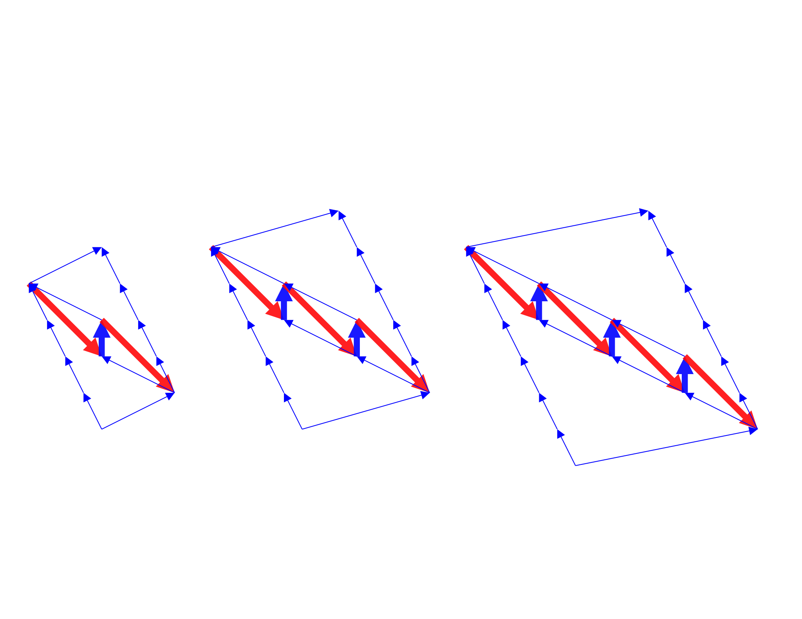
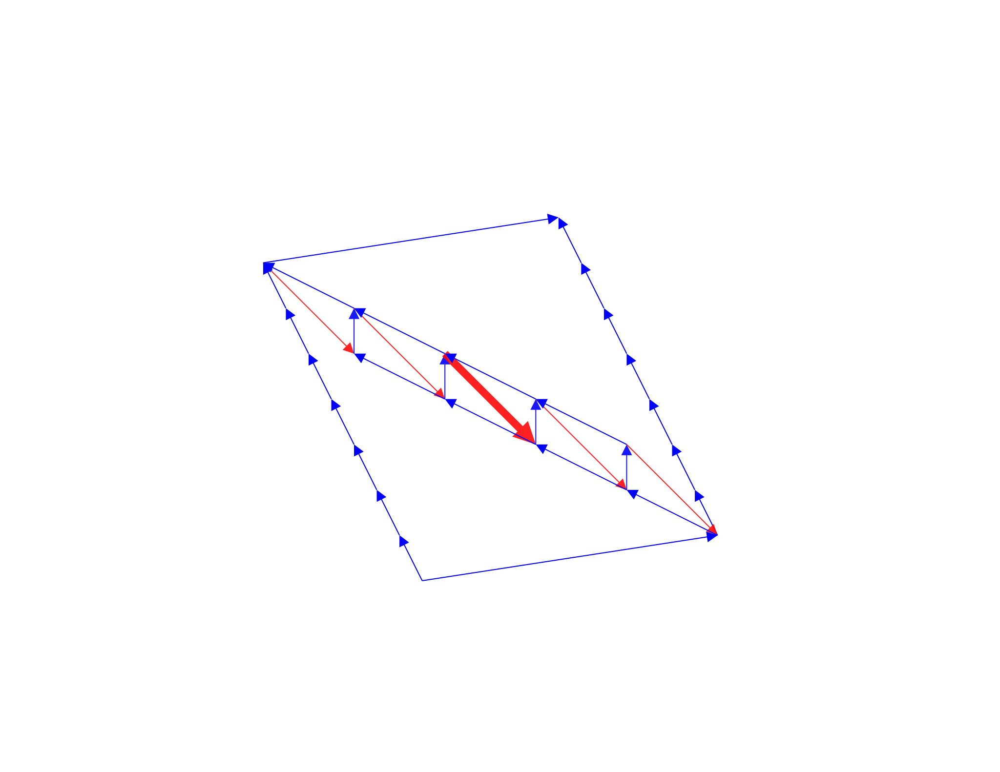
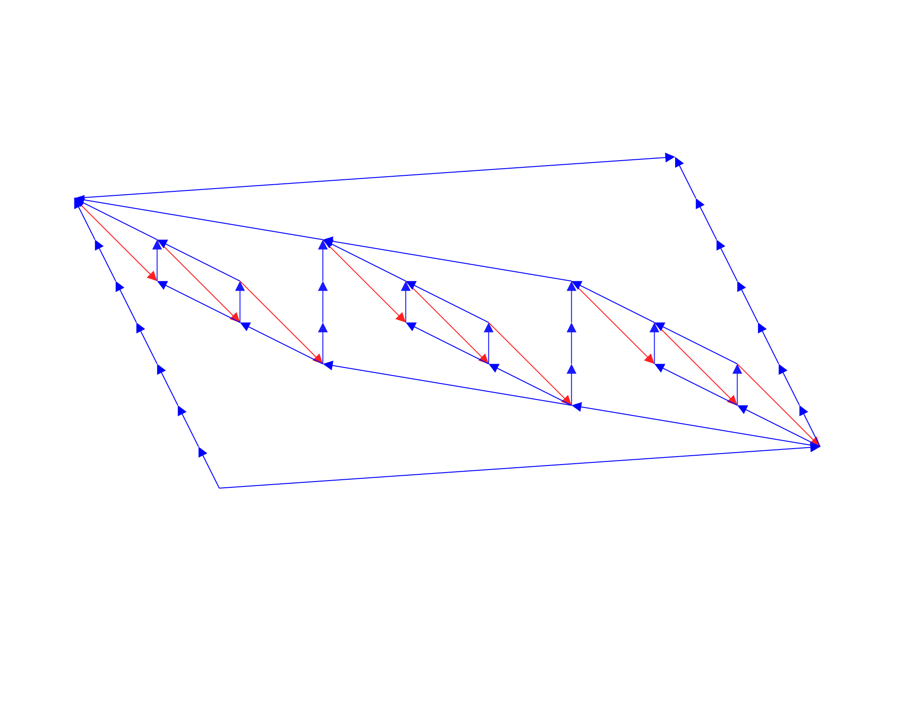
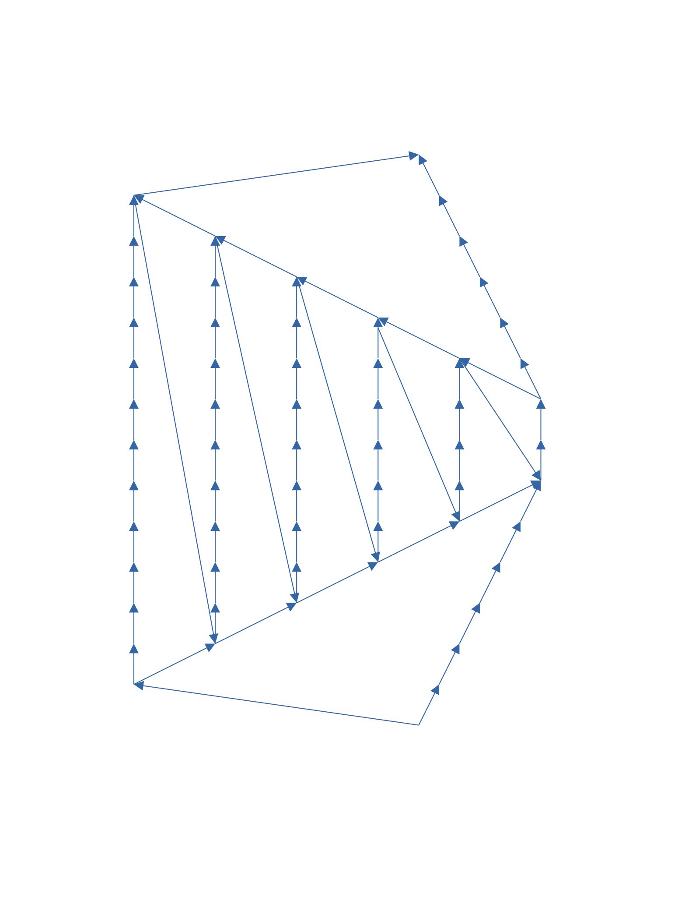

To facilitate our discussion, let's expand the existing definitions and make a few things formal. For , let's refer to a simple path in (ie. completely outside except the end points) from to as a hop from to . We say it is forward if , lateral if , and backward if . Call a consecutive sequence of backward hops a backward flight.
The central idea behind the flawed algorithm is that we can try to detect detours by detecting certain features. So far this idea works well when the feature is a forward hop, a lateral hop, or a "nice" backward hop or flight (using the "pebbling game" in Fortune et al.).
Unfortunately, there is still a significant obstacle.
Consider the following "saw patterns" 1:
They are "irreducible" in the sense that in order to detect the detours, we need to detect the patterns without breaking them apart.
However, we can get a "reducible" saw pattern by extending the last saw pattern adding a backward hop:
It's "reducible" in the sense that we only need to be able to detect the highlighted backward hop. In fact the flawed algorithm already works with this fix.
It would be nice if we could bound the complexity of irreducible saw patterns. Unfortunately, attempts to bound the length would inevitably fail because of "fractals saw patterns" like this one:
But at least fractals are nice in a certain way: they are recursive. One hopeful (or hopeless?) direction is to identify a finite set of generators of all saw patterns. Let's see how far we can get along this line …
EXERCISE:
Is there a reducible saw pattern in this graph?
My apologies to traders in long positions.↩︎